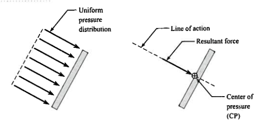
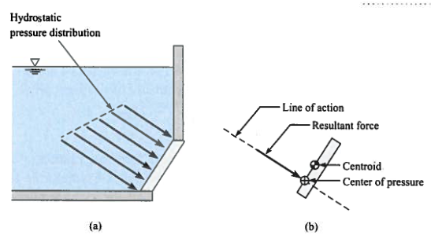
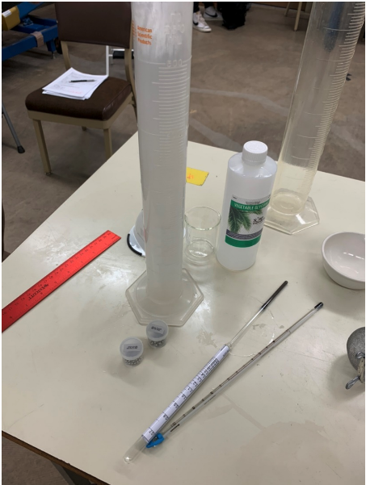
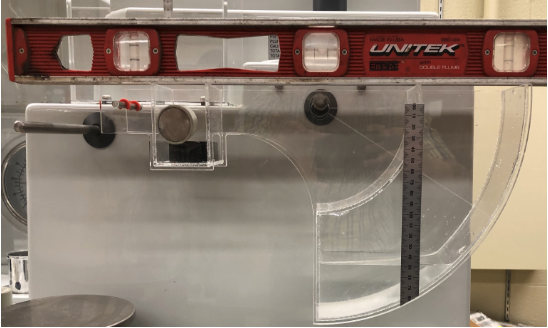

Lab 1 - Fluid Properties#
Course Website
Readings#
Videos#
Outline#
Fluid properties; density, specific weight, viscosity
Bouyancy; Archimedes’ Principle
Hydrostatic Forces on Submerged Planar Surfaces
Laboratory Objectives
4.1 Material Properties#
A fluid has certain characteristics by which its physical condition may be described. These characteristics are called properties of the fluid.
Note
Properties help describe the “state” of the system under study. A system is whatever is being studied or analyzed, anything not part of the system is part of the surroundings. The boundary is the imagined surface that separates the system from its surroundings.
Systems are described by specifying values that characterize the system; these values are called properties. A property is a measurable characteristic of a system that depends only on the present conditions within the system (called the state of the system). The state of a system means the conditions of the system as defined by specifying its properties.
Properties can be organized into categories, one of which is material properties; the properties explored in this laboratory are selected material properties of some liquids
Mass Density#
Mass density, or just plain density, denoted by the symbol \(\rho\), is a fundamental property of all substances, including fluids.
It is defined as the mass per unit volume of a material and can be expressed as an equation in words:
Or using Greek letters, mathematically as:
Units: \(\mathrm{kg/m^3}\) (SI), \(\mathrm{lbm/ft^3}\) (FPS).
In the context of fluids, density provides critical insight into how fluids behave under various conditions, such as flow through pipes, buoyancy, and pressure variations with depth.
For instance, the density of water at standard temperature and pressure (STP) is approximately \(1000~kg/m^3\), while air has a much lower density of about \(1.2~kg/m^3\).
Measuring Density of Fluids#
Practical methods to measure the density of a liquid include:
Gravimetric Method
This method involves directly measuring the mass and volume of a liquid sample and using the formula \(\rho = \frac{M}{V}\).
Steps:
Weigh an empty container on a precision scale and record its mass.
Fill the container with the fluid and weigh it again to determine the mass of the fluid (\(M\)).
Measure the volume (\(V\)) of the fluid using a graduated cylinder or volumetric flask.
Calculate the density.
Example:
If \(M=0.25 kg\) and \(V=0.00025 m^3\), the density is:
\(\rho=\frac{0.250~kg}{0.00025~m^3}=1000 kg/m3\)
Hydrometer Method
A hydrometer is a floating instrument calibrated to measure fluid density directly.
Steps:
Submerge the hydrometer in the fluid.
Read the density from the scale where the hydrometer’s surface level aligns with the fluid.
This method is especially useful for liquids like alcohol, brines, and oils.
Pycnometer Method
A pycnometer is a specialized container with a known volume used for highly precise density measurements.
Steps:
Weigh the empty, dry pycnometer.
Fill it with the fluid and weigh it again to determine the mass of the fluid.
Calculate the density using the known volume of the pycnometer.
Note
The pycnometer is clearly a gravimetric technique, but eliminates the need to measure the volume, as the device itself performs this measurement directly
Importance of Density in Fluid Mechanics#
Understanding density is critical for:
Buoyancy Analysis: The density difference between a fluid and a submerged object determines whether it floats or sinks.
Hydrostatics: Density directly influences the pressure variation in a fluid column, P=ρghP=ρgh.
Flow Dynamics: Density is a key parameter in determining the Reynolds number, which predicts flow behavior (laminar or turbulent).
Temperature Matters
At a given temperature and pressure the density of a given liquid is constant. Let us say we keep pouring some liquid into a beaker, as the mass increases so does the volume whereas density, which is the ratio of mass to volume, stays constant.
As such all experimental determinations of density require that the temperature of the liquid be measured.
Accurately measuring and understanding fluid density, informs engineers so they can design systems involving fluid transport, storage, and control.
Specific Weight#
Specific Weight is the weight per unit volume of the material. Remember that weight is a force obtained by multiplying mass and gravitational acceleration (g).
As an equation in words:
or more conventionally
At a given temperature, pressure and location, the specific weight of a fluid is constant. However, the acceleration due to gravity varies slightly with location. The specific weight of a fluid is slightly lower at the poles than at the equator even when the temperature and pressure of the fluid are the same at both locations.
Specific Gravity#
Specific Gravity is another important fluid property that is defined as the ratio of the density of a fluid to the density of water at the same temperature.
Clearly, the specific gravity is equal to 1.0 for water. Fluids denser than water have a specific gravity greater than 1 while those lighter than water have specific gravity less than 1.
Being a ratio of two densities, specific gravity is a dimensionless quantity. Specific gravity can tell us whether an object will float or sink in water. Specific Gravity also provides consistency to compare fluids across different units.
Viscosity#
Viscosity is a measure of a fluid’s resistance to deformation or flow under an applied shear force. It quantifies the internal friction between adjacent layers of fluid that are moving at different velocities. Viscosity plays a central role in fluid mechanics as it affects flow characteristics, energy losses, and the behavior of fluids in engineering systems.
There are two primary types of viscosity:
Dynamic Viscosity (\(\mu\))#
Dynamic viscosity measures the tangential force per unit area (ττ) required to move one fluid layer relative to another at a unit velocity while maintaining a unit distance separation. It follows Newton’s law of viscosity:
\(\tau = \mu \frac{\partial y}{\partial u}\)
Where:
\(\tau\): is the applied shear stress (\(Pa\))
\(\mu\): is the dynamic viscosity (\(Pa \cdot s\))
\(\frac{\partial y}{\partial u}\): is the velocity gradient perpendicular to the flow.
Kinematic Viscosity (\(\nu\))#
Kinematic viscosity is the ratio of dynamic viscosity to fluid density:
\(\nu = \frac{\mu}{\rho}\)
Units: \(m^2/s\) in SI.
Viscosity Details#
Viscosity quantifies the ability of the fluid to resist shear stress (i.e., internal resistance). One can also conceptualize viscosity as the frictional forces that exist between two layers of fluid that are in relative motion.
Dynamic Viscosity measures the tangential force per unit area required to move one horizonal plane relative to another at a unit velocity when maintaining unit distance separation. The shear stress applied causes the fluid to flow (or flow causes stress).
Newton’s law of viscosity states that the shear stress, \(\tau\), is proportional to the velocity gradient (across the flow flow), \(\frac{du}{dy}\) (see Figure 1). Dynamic viscosity ,\(\mu\), is the constant of proportionality.

Newton’s law expressed as an equation is: $\(\tau = \mu \cdot \frac{du}{dy} \)$
thus dynamic viscosity is the ratio of shear force to the velocity gradient. It has units of \( Pa \cdot s = \frac{kg \cdot m}{s^2} \cdot \frac{s}{m^2}\).
In cgs system the units of dynamic viscosity is Poise (or more commonly centipoise, cP).
In US Customary units we express viscosity as \(\frac{lbf}{ft \cdot s}\).
In practical fluid mechanics, we often encounter the ratio of dynamic viscosity to density. This term is the kinematic viscosity.
Expressed as an equation in commonly used notation:
The kinematic viscosity has SI units of $\(\frac{m^2}{s}\)$.
A useful method to determine viscosity of liquids is to record the rate at which a sphere will fall through a liquid of interest. Under equilibrium conditions, the frictional forces experienced by the sphere will be equal to its weight. The sphere will fall at a constant speed known as the terminal velocity. The phenomenon is called Stokes law (or Stokes flow).
A simple force balance is depicted in Figure 2, where the bouyant force and drag force are equal to the weight of the sphere.

Stokes flow occurs at pretty low Reynolds numbers so the laminar correlation for the drag coefficient is appropriate
If the Reynolds number is less than \(\frac{1}{2}\) the drag coefficient is \(c_d = \frac{24}{Re}\), using this representation of drag the force balance for the sphere allows us to solve for velocity, \(u\),
where, g is the acceleration due to gravity, d is the diameter of the sphere, \(\nu\) is the kinematic viscosity, \(\sigma\) is the density of the sphere, \(\rho\) is the density of the fluid.
We can apply the formula to get an idea of how fast to expect a sphere to fall if Stokes flow holds. In the experiment we will use Glycerine as the liquid phase, and small steel spheres the largest is about 2.5 millimeters
# Estimate Sphere Falling Speed assuming laminar (Stokes) flow
# --- Inputs ---
gravity = 9.81 # m/s^2
viscosity = 15.103 # Ns/m^2
density_liquid = (69.5 / 50) * 1000 * 1000 # kg/m^3
density_sphere = 11.350 * 1000 * 1000 # kg/m^3
diameter = 0.0025 # meters (nominal 2.5 mm sphere)
# --- Print Inputs ---
print("INPUTS:")
print(f" Gravitational acceleration = {gravity:.2f} m/s^2")
print(f" Dynamic viscosity of liquid = {viscosity:.3f} Ns/m^2")
print(f" Density of liquid = {density_liquid:.1f} kg/m^3")
print(f" Density of sphere = {density_sphere:.1f} kg/m^3")
print(f" Sphere diameter = {diameter*1000:.2f} mm")
# --- Computation ---
upper_support_terminal_speed = (gravity * diameter**2) * (density_sphere - density_liquid) / (18.0 * viscosity)
# --- Output ---
print("\nOUTPUT:")
print(f" Estimated terminal speed (Stokes flow) = {upper_support_terminal_speed * 1000:.3f} mm/s")
INPUTS:
Gravitational acceleration = 9.81 m/s^2
Dynamic viscosity of liquid = 15.103 Ns/m^2
Density of liquid = 1390000.0 kg/m^3
Density of sphere = 11350000.0 kg/m^3
Sphere diameter = 2.50 mm
OUTPUT:
Estimated terminal speed (Stokes flow) = 2246.325 mm/s
So using the above script we conclude that we should be able to make measurements for spheres as large as 25 mm, using a stopwatch and visual observation, our spheres are quite a bit smaller, so we should have no issues.
Measuring Viscosity#
Several methods can be used to measure viscosity. In this laboratory, we will use on Stoke’s law due to its feasibility, but additional methods are included for context.
Stoke’s Law (Falling Sphere Method)
Principle: A small sphere is dropped into a fluid, and its terminal velocity (\(u\)) is recorded. Under terminal velocity conditions, the drag force equals the sum of buoyant and gravitational forces. From Stoke’s law, the dynamic viscosity is calculated as:
\(\mu=\frac{2r^2(\rho_s−\rho_f)g}{9u}\)
Where:
\(r\): Sphere radius (mm)
\(\rho_s,\rho_f\): Densities of the sphere and fluid (\(kg/m^3\))
\(g\): Gravitational acceleration (\(m/s^2\))
\(u\): Terminal velocity (\(m/s\))
Setup: Use a tall column of fluid, small spheres, and a stopwatch to measure the sphere’s falling time over a known distance.
Capillary Tube Viscometer
Principle: Measures the time (\(t\)) it takes for a fluid to flow through a capillary under gravity or applied pressure. Viscosity is calculated as:
\(\mu=K \cdot t\)
Where \(K\) is a calibration constant based on the tube’s geometry and fluid properties.
Use: Common for low-viscosity fluids like water and oils.
Rotational Viscometer
Principle: Measures the torque required to rotate an object (e.g., spindle or cylinder) in a fluid at a constant speed. The torque is proportional to the fluid’s viscosity.
Use: Suitable for measuring a wide range of viscosities, including non-Newtonian fluids.
Inclined Plane Method
Principle: A known volume of liquid is released on an inclined plane, and the time it takes to travel a set distance is recorded. The viscosity is inferred from the relationship between time, fluid properties, and inclination angle.
Use: While less precise, this method is a feasible alternative for determining relative viscosities in a laboratory.
Importance of Viscosity in Fluid Mechanics#
Viscosity influences several critical aspects of fluid behavior, including:
Energy Losses: Higher viscosity increases resistance to flow, leading to greater energy dissipation.
Laminar and Turbulent Flow: The Reynolds number, which predicts flow regimes, depends on viscosity.
Practical Applications: From lubrication in machinery to fluid transport in pipelines, viscosity is a key parameter.
Temperature Matters
Viscosity is strongly temperature-dependent. Consider how honey flows more easily when warmed compared to when it’s at room temperature or chilled. Similarly, engine oil thickens in cold weather, making it harder for car engines to start.
As such, all experimental determinations of viscosity require that the temperature of the liquid be measured.
By accurately measuring viscosity, engineers can design efficient systems that minimize losses and optimize performance. In this lab, we will use Stoke’s law to measure the viscosity of different fluids, but the insights extend to various industrial and natural applications.
4.2 Bouyancy#
Buoyancy is the tendency of an object to float or rise when placed in a fluid (liquid or gas). This phenomenon is the result of a vertical force called the buoyant force, which acts in the direction opposite to gravity. Understanding buoyancy helps explain why objects feel lighter in water, why some things float while others sink, and how engineers design ships, submarines, and even hot air balloons.
The buoyant force originates from pressure differences in the surrounding fluid. Since pressure increases with depth, the pressure on the bottom surface of a submerged object is always greater than on the top surface. This imbalance in pressure results in a net upward force—the buoyant force.
Whether an object floats, sinks, or remains neutrally buoyant depends on the relationship between the object’s weight and the buoyant force:
Floats if the buoyant force is greater than the object’s weight.
Sinks if the buoyant force is less than the object’s weight.
Suspends or remains neutrally buoyant if the buoyant force equals the object’s weight.
In simple terms:
Less dense objects float.
More dense objects sink.
Objects with equal density to the fluid will hover at a constant depth.
This principle is not only foundational in fluid mechanics but also in fields such as:
Civil engineering: understanding forces on submerged structures.
Naval architecture: ensuring stability of floating vessels.
Biomedical engineering: designing implants or devices that behave predictably in bodily fluids.
Note
A common misconception is that only floating objects experience buoyancy. In fact, all submerged objects—floating or not—experience a buoyant force, even if it’s not enough to prevent sinking. That’s why people feel lighter in a swimming pool—the buoyant force supports part of their weight.
Understanding buoyancy not only explains everyday observations but also provides a tool to measure unknown volumes or densities. By submerging an object and calculating the displaced fluid’s weight, engineers and scientists can infer properties that are otherwise difficult to measure.
Archimedes’ Principle#
Archimedes’ principle states that an object submerged in a fluid experiences an upward buoyant force equal to the weight of the displaced fluid. For partially submerged objects, the buoyant force corresponds to the weight of the volume of the submerged portion.
Key Points:
Fully Submerged Objects: The volume of the displaced fluid equals the object’s volume.
Partially Submerged Objects: The buoyant force balances the object’s weight, ensuring it floats without sinking or rising.
Archimedes principle is useful to find the volume of irregularly shaped objects - Simply submerge them into a liquid and measure the volume displaced. Similarily it is useful for determining the density of irregularly shaped objects. (The curated videos above have examples of these applications).
A more detailed representation is
when a solid object is fully or partially submerged into a liquid then the upward buoyant force exerted by the liquid on the object is equal to the weight of the liquid displaced by the object. Mathematically, this can be stated as:
where, \(V_f\) is the volume of the liquid displaced m3, \(\rho\) is the density of the liquid (\(\frac{\)kg}{m^3}\(), \)g\( is the gravitational acceleration and \)B\( is the buoyant force (\)N\() and \)W_f\( is the weight of the displaced liquid (\)N$).
Note
It is important to remember that when an object sinks to the bottom of the liquid in a container, there is still a buoyant force acting on it. This buoyant force is still equal to the weight of the liquid that is displaced. However, the upward buoyant force exerted on the object is insufficient to overcome the downward gravitational force which causes the object to sink. In this situation, as the object is fully submerged, the volume of the object is equal to the volume of the liquid displaced. The object will feel lighter than in air due to buoyancy.
When an object is floating on a surface (neither raising or sinking) then the volume of the liquid displaced by the object is not equal to the volume of the object. It is only equal to the volume of the object that is submerged in the liquid. However, the upward buoyant force of the liquid exactly balances the weight of the object.
4.3 Forces on Submerged Plane Surfaces#
When a uniform pressure acts on a plane surface:

The magnitude of the resultant force is the product of the plane area and the pressure.
The resultant force acts at the centroid of the plane area
The center of pressure (uniform pressure) is coincident with the centroid.
When a plane surface is submerged in a liquid:

The fluid createss a hydrostatic pressure distribution that increases linearly with depth.
The magnitude of the resultant force is the product of the plane area and the pressure at the plane area centroid.
The line of action of the resultant force acts at the center of pressure of the submerged area, which is deeper then the centroid of the plane area.
The force exerted by liquids on surfaces they come to contact with is important when determining engineering structures to hold fluids (e.g., tanks,reservoirs). If water is our liquid of interest, then the hydrostatic pressure exerted by the liquid varies linearly with depth.
For engineering design, we replace the pressure distribution with a resultant hydrostatic pressure acting at the centroid. This resultant force is obtained by multiplying the hydrostatic pressure with the cross-sectional area over which the liquid exerts the pressure. The pressure is assumed to act normal to this planar area. The point where the resultant pressure (force) is assumed to act is also referred to the center of pressure (see Figure above). The center of the pressure is defined as “the point in a plane at which the total liquid thrust is be acting normal on that plane”.
Laboratory Objectives#
Develop an experimental protocol (step-by-step instructions) to a) measure density, specific gravity, and viscosity of three different liquids and to collect, analyze, and interpret data related to hydrostatic forces and buoyancy.
Conduct experiments in triplicate to measure the density, specific gravity, and viscosity of three different liquids.
Apply Archimedes’ principle to determine buoyant forces on submerged and partially submerged objects.
Analyze hydrostatic Forces on plane surfaces, calculating the resultant force and locating the center of pressure using theoretical methods.
Use the quadrant balance to measure moments caused by hydrostatic forces and validate theoretical predictions.
Document the experiment(s) into a laboratory report and address the following in the report:
Fluid Properties
Derive the fall velocity equation, starting from the force balance on the sphere and assuming that \(C_D=\frac{24}{Re_D}\)
Compare your results with tabulated values for density and viscosity for the three fluids.
Bouyancy
Calculate the volume of displaced water, \(\Delta V\), for all objects. Determine the buoyancy force, \(F_B\), on each object.
For fully submerged objects, calculate the volume of the object based on displacement.
Use the measured mass and the density of the object to calculate the volume of the objects.
How do they compare with volumes measured using water displacement?
For the floating object-Calculate the mass of the object using Archimedes principle.
How does this mass compare to the measured value?
Center of Pressure
Calculate moment (\(M\)) for generated by each applied weight.
Using the \(\sum{M} = 0\) principle calculate the approximate vertical force for each set of measurements. This force acts at a distance of \(\frac{3b}{8}\) from the planar surface. While this is strictly true only for partially submerged conditions; it is a first-order approximation for the fully submerged case as well.
Plot moment \(M\) (Nm) vs. height of depth of liquid, \(h\) (m) for the fully submerged dataset. Fit a straight line and compute the coefficient of determination \(R^2\).
Use the slope of the line from previous step - which is equal to \(- \frac{\gamma_w W}{2}(R_2^2-R_1^2)\). Using R1 = 100 mm and R2= 200 mm, calculate the weight of water per unit volume (\(\gamma_w\)).
Compare this value to the specific weight reported in the literature for the measured temperature. For the partially submerged dataset plot \(M + \frac{\gamma_w W R_2^2 h}{2}\) versus \(h^3\).
Fit a straight line and evaluate the adequacy of the fit using the coefficient of determination \(R^2\).
Evaluate Results
Evaluate experimental results against theoretical expectations.
Experiments are conducted in triplicate, so you can compute mean values and standard deviations; what does this information tell us about the accuracy of the measurements?, What does it tell us about the repeatability of the measurements?
What are some potential sources of errors in your lab experiments. Discuss in the context of measuring density, specific gravity and viscosity.
Experimental Setup(s)#
Note
This laboratory exercise uses two different hydraulic benches (set-ups). One bench has the materials for fluid properties measurement and bouyancy, the other bench has the quadrant balance set up.
Fluid Properties#
The photograph below shows the required equipment needed for the fluid properties and bouyancy components of the laboratory exercise. Missing from the photograph is the electronic scale or analytical balance needed for weighing various objects.

Liquids: Water, salt water, glycerin
Measurement tools: Thermometer, hydrometer, graduated cylinders, scale, and stopwatch/iPhone
Steel balls of varying diameters
Other equipment: Beakers and recording devices, electorinc scale or analytical balance.
Quadrant Balance#
The photograph below shows the quadrant balance with a leveling mass in the trim tank (to the left of the pivot point) and a partially submerged case (water surface between lower and upper curved surface) to the right of the pivot. The carpenter’s level is not part of the appratus, although it is useful at times for the experiment.

The quadrant balance is used to measure the moment caused by hydrostatic forces on submerged surfaces. By balancing the apparatus and recording the moments, you can compare experimental results to theoretical calculations.
Key Procedure Highlights:
Adjust the apparatus to ensure accurate alignment of the plane surface.
Incrementally submerge the plane and record measurements of force and depth. (In our experiments we adjust the water depth instead)
Use the data to calculate hydrostatic forces and verify against theoretical predictions.
The quadrant balance provides a direct and practical way to understand hydrostatic forces, combining fundamental principles with hands-on experimentation.
The sketch below show the apparatus which permits the moment caused by the total liquid thrust on a wholly or partially submerged plane surface to be measured directly and compared with theoretical analysis.

The photograph below illustrates the apparatus set up in the laboratory
Note
The following analysis from H314 Hydrostatic Bench User Manual is applied to the general condition of plane surface at various angles when it is wholly or partially submerged in a liquid.
Consider an element at an inclined depth \(y\) and height \(\delta y\).
The force on this infinitesimal (itty-bitty) element can be written as:
Where, \(\gamma_w\) is the weight per unit volume of the liquid , \(W\) is the width of the plane normal to the direction of the force and \(h\) is the height to the water surface measured from the pivot point O (see the apparatus sketch).
The moment of force on element about the point O, \(\delta M\) can be written as
The total moment (M) over the entire submerged surface can be obtained by integrating:
The limits of integration in 8 depends upon whether the plane is fully sub- merged or partially submerged. For the fully submerged case, the limits are from R1 to R2 and the equation for the moment around point O can be written as:
This equation is of the form of y = mx + b,therefore, a plot of M against h will yield a straight line of gradient
This slope can be used to calculate the unknown specific weight \(\gamma_w\).
For a partially submerged plane, the limits of the integration are from \(R_2\) to \(hsec(\theta)\). The moment in this case is given as:
A plot of \(M + \frac{\gamma_w W R_2^2 h}{2}\) versus \(h^3\) will result in a straight line plot.
An alternate analysis simply focuses on finding the weight of the water element in the quadrant balance, and the location of the centroid of that element, using integration.
For the unsubmerged case, assume a volume of water is added, and the weights are added to the hanger until the balance is level (top edge horizontal). Also it is stipulated that the balance is initially trimmed (hence the point of the trim tank) so the instrument itself does not contribute to the moment balance.
Once horizontal the following hold:
\(Y = R2 - d\)
\(\theta = cos^{-1}(1 - \frac{2*Y}{2*R2})\)
\(X = R2*sin(\theta)\)
To find the area, evaluate the integral
\(A = \int_0^X dA = \int_0^X Y - (R2 - \sqrt{(R2^2 - x^2)} dx\)
To find centroids evaluate the first moments of area about the \(x\) and \(y\) axes
\(\bar x = \frac{\int_0^X x * (Y - (R2 - \sqrt{(R2^2 - x^2)}) dx}{A}\)
\(\bar y = \frac{\int_0^X 1/2 * (Y^2 - [R2 - \sqrt{(R2^2 - x^2)}]^2)dx}{A}\)
Then multiply by the tank thickness (breath) to obtain a water volume (which should be the same as the added volume).
Once volume is known, the product of volume and specific weight gives the weight of the water (acting through the center of gravity) and makes the force balance simple to evaluate.
The script below makes the necessary calculations (again using numerical integration methods) given the depth of water in a level (and trimmed) quadrant balance.
https://en.wikipedia.org/wiki/List_of_centroids
import numpy as np
import math
import matplotlib.pyplot as plt
from math import sqrt, asin
from scipy.integrate import quad
## Quadrant Balance Script for UNSUBMERGED CASES
## Verify by direct measurement on apparatus
## These are constants, just check they agree with the physical instrument
R1 = 100 # mm Inner radius of balance
R2 = 200 # mm Outer radius of balance (also acts as radius of curved face)
R3 = 200 # mm Moment arm for weight hanger
B = 75 # mm Breadth of plane (how wide is the quadrant balance between front and back walls - inside measure)
## BE SURE BALANCE IS TRIMMED LEVEL BEFORE MAKING REMAINING MEASUREMENTS
## The moment analysis depends on trimmed empty tank, so its mass does not contribute to the moment balance.
## Liquid Properties
## Measure at beginning of experiment, they won't change during experiment enough to impact results.
Temp = 20 # degrees Celsius (use value to look up water density)
rho = 998 # density in kg/m^3
SpW = 9790 # specific weight in N/m^3 (use if you work in force balance directly)
## Measured Values (modify for each test)
d = 70 # mm Distance from pivot to water surface (measured vertically)
W = 50 # grams Weights on hanger (to balance hydrostatic moment)
# === Area and Centroid Integrals ===
# The following compute area and first moments of area for the fluid wedge above the circular arc and below waterline
# Area of curved segment from x=0 to x=X
def dA_numeric(X, Y, r):
integrand = lambda x: Y - (r - np.sqrt(r**2 - x**2)) # height of fluid above curved surface
result, _ = quad(integrand, 0, X)
return result
# First moment of area about y-axis (used to get x̄)
def xdA_numeric(X, Y, r):
integrand = lambda x: x * (Y - (r - np.sqrt(r**2 - x**2)))
result, _ = quad(integrand, 0, X)
return result
# First moment of area about x-axis (used to get ȳ)
def ydA_numeric(X, Y, r):
integrand = lambda x: 0.5 * (Y**2 - (r - np.sqrt(r**2 - x**2))**2)
result, _ = quad(integrand, 0, X)
return result
# === Geometry Calculations from Inputs ===
r = R2
depth = R2 - d # Vertical depth of water below quadrant pivot point
Y = depth # y = depth of horizontal waterline from center of arc
# Compute angle θ and horizontal X extent of wetted curved area
angle = math.acos(1 - 2.0 * depth / (2.0 * r)) # radians subtended by chord
X = math.sin(angle) * r # horizontal reach of water surface from centerline to edge
# === Numerical Integrations ===
A_numeric = dA_numeric(X, Y, r)
xA_numeric = xdA_numeric(X, Y, r)
yA_numeric = ydA_numeric(X, Y, r)
x_bar = xA_numeric / A_numeric
y_bar = yA_numeric / A_numeric
Volume = A_numeric*B*(1/1000)**3 # convert to m^3
Mass = Volume*rho
Weight = Volume*SpW
print(f"Numerical area A (quad): {A_numeric:.3f} mm²")
print(f"Numerical x̄ (quad): {x_bar:.3f} mm")
print(f"Numerical ȳ (quad): {y_bar:.3f} mm")
print(f"Volume Water (m^3): {Volume:.3f}")
print(f"Mass Water (kg): {Mass:.3f}")
print(f"Weight Water (Newtons): {Weight:.3f}")
# === Plotting for Visual Sanity Check ===
y_line = Y # constant waterline height
# Semicircle arc
x_vals = np.linspace(0, X, 100)
y_vals = r - np.sqrt(r**2 - x_vals**2) # arc height
# Horizontal waterline (constant height)
y_const = np.full_like(x_vals, y_line)
# Begin plot
plt.figure(figsize=(6, 4))
plt.plot(x_vals, y_vals, label='y = r - √(r² - x²)', color='blue')
plt.axhline(y=y_line, color='red', linestyle='--', label=f'y = {y_line:.0f} mm')
# Fill fluid region (between curve and waterline)
plt.fill_between(x_vals, y_line, y_vals, where=(y_vals < y_line),
interpolate=True, color='blue', alpha=0.5,
label='Fluid Region')
# Mark centroid
plt.plot(x_bar, y_bar, 'ko', label='Centroid')
plt.text(x_bar + 5, y_bar, f'({x_bar:.1f}, {y_bar:.1f})', fontsize=8)
# Format plot
plt.title("Fluid Region Above Circular Arc")
plt.xlabel("x (mm)")
plt.ylabel("y (mm)")
plt.grid(True)
plt.axis('equal')
plt.legend(loc='lower right')
plt.tight_layout()
plt.show()
Numerical area A (quad): 17707.257 mm²
Numerical x̄ (quad): 74.762 mm
Numerical ȳ (quad): 76.209 mm
Volume Water (m^3): 0.001
Mass Water (kg): 1.325
Weight Water (Newtons): 13.002
The unsubmerged case is more complex, but the gist of the analysis is to
Compute area and centroid of an annular fluid region as the difference between two segments.
Apply the principle of composite areas:
\(A = A_{outer}-A_{inner}\)
Apply moment balances:
\(\bar x = \frac{xA_{outer} - xA_{inner}}{A}\)
\(\bar y = \frac{yA_{outer} - yA_{inner}}{A}\)
The script below makes the necessary calculations (again using numerical integration methods) given the depth of water in a level (and trimmed) quadrant balance.
import numpy as np
import math
import matplotlib.pyplot as plt
from scipy.integrate import quad
# === Instrument Constants ===
R1 = 100 # mm Inner radius
R2 = 200 # mm Outer radius
B = 75 # mm Breadth
R3 = 200 # mm Moment arm (not used yet)
# === Fluid Properties ===
Temp = 20
rho = 998 # kg/m³
SpW = 9790 # N/m³
# === Experimental Input ===
d = 90.0 # mm depth from pivot to water surface
W = 50 # grams (counterweight)
# === Derived Geometry ===
depth = R2 - d # Vertical depth from outer arc center to waterline
Y = depth # Height from outer arc center to waterline
assert Y <= R2, "Overflow: water depth exceeds outer arc."
assert Y > 0, "No fluid present."
# Centroid integrals for a segment from arc up to waterline
def area_segment(X, Y, r):
integrand = lambda x: Y - (r - np.sqrt(r**2 - x**2))
result, _ = quad(integrand, 0, X)
return result
def x_moment_segment(X, Y, r):
integrand = lambda x: x * (Y - (r - np.sqrt(r**2 - x**2)))
result, _ = quad(integrand, 0, X)
return result
def y_moment_segment(X, Y, r):
integrand = lambda x: 0.5 * (Y**2 - (r - np.sqrt(r**2 - x**2))**2)
result, _ = quad(integrand, 0, X)
return result
# === Outer arc intercepts ===
theta_outer = math.acos(1 - 2.0 * Y / (2.0 * R2))
X_outer = math.sin(theta_outer) * R2
# === Inner arc intercepts ===
# Inner arc lies 100 mm *above* the outer arc → depth from inner arc center = Y - 100
Y_inner = Y - (R2 - R1)
if Y_inner <= 0:
# Inner arc not submerged → entire area is outer segment
X_inner = 0.0
A_fill = area_segment(X_outer, Y, R2)
x_fill = x_moment_segment(X_outer, Y, R2)
y_fill = y_moment_segment(X_outer, Y, R2)
else:
theta_inner = math.acos(1 - 2.0 * Y_inner / (2.0 * R1))
X_inner = math.sin(theta_inner) * R1
A_outer = area_segment(X_outer, Y, R2)
xA_outer = x_moment_segment(X_outer, Y, R2)
yA_outer = y_moment_segment(X_outer, Y, R2)
A_inner = area_segment(X_inner, Y_inner, R1)
xA_inner = x_moment_segment(X_inner, Y_inner, R1)
yA_inner = y_moment_segment(X_inner, Y_inner, R1)
A_fill = A_outer - A_inner
x_fill = xA_outer - xA_inner
y_fill = yA_outer - yA_inner
# === Centroid location ===
x_bar = x_fill / A_fill
y_bar = y_fill / A_fill
Volume = A_fill*B*(1/1000)**3 # convert to m^3
Mass = Volume*rho
Weight = Volume*SpW
print(f"Submerged Annular Area: {A_fill:.2f} mm²")
print(f"Centroid x̄: {x_bar:.2f} mm")
print(f"Centroid ȳ: {y_bar:.2f} mm")
print(f"X_outer: {X_outer:.2f} mm")
print(f"X_inner: {X_inner:.2f} mm")
print(f"Surface Width: {X_outer - X_inner:.2f} mm")
print(f"Depth Water (mm): {depth:.3f}")
print(f"Volume Water (m^3): {Volume:.3f}")
print(f"Mass Water (kg): {Mass:.3f}")
print(f"Weight Water (Newtons): {Weight:.3f}")
# === Plotting ===
x_vals = np.linspace(0, X_outer, 200)
y_outer = R2 - np.sqrt(R2**2 - x_vals**2)
y_inner = R1 - np.sqrt(R1**2 - x_vals[x_vals <= R1]**2) + (R2 - R1) # shift inner arc upward
plt.figure(figsize=(6, 4))
plt.axhline(y=Y, color='red', linestyle='--', label='Waterline')
# Outer arc and fill
plt.plot(x_vals, y_outer, label='Outer Arc (R2)', color='blue')
plt.fill_between(x_vals, y_outer, Y, where=(y_outer < Y), color='blue', alpha=0.4)
# Inner arc and masking region
if Y_inner > 0:
x_inner = x_vals[x_vals <= R1]
plt.fill_between(x_inner, y_inner, Y, where=(y_inner < Y), color='white', zorder=1)
plt.plot(x_inner, y_inner, label='Inner Arc (R1)', color='green')
# Centroid
plt.plot(x_bar, y_bar, 'ko', label='Centroid')
plt.text(x_bar + 5, y_bar, f'({x_bar:.1f}, {y_bar:.1f})', fontsize=8)
plt.title("Submerged Fluid Region (Annular Segment)")
plt.xlabel("x (mm)")
plt.ylabel("y (mm)")
plt.grid(True)
plt.axis('equal')
plt.legend(loc='lower right')
plt.tight_layout()
plt.show()
Submerged Annular Area: 13749.73 mm²
Centroid x̄: 71.52 mm
Centroid ȳ: 66.02 mm
X_outer: 178.61 mm
X_inner: 43.59 mm
Surface Width: 135.02 mm
Depth Water (mm): 110.000
Volume Water (m^3): 0.001
Mass Water (kg): 1.029
Weight Water (Newtons): 10.096
4.4 Deliverables#
A laboratory report documenting the actual experiments, and other required content including comparison to tabulated values. The report should contain an experimental protocol (step-by-step instructions) to measure density, specific gravity, and viscosity of three different liquids, and operate the quadrant balance. The other usual report components should be included as described in report format section of the notebook.